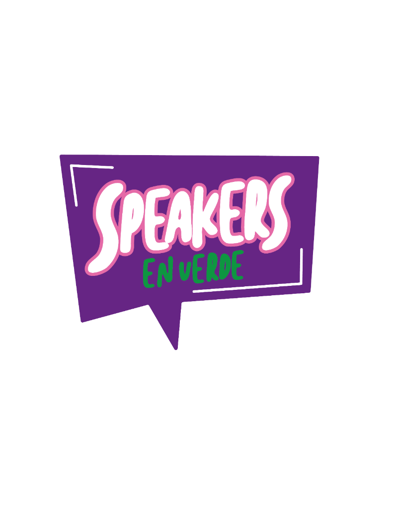
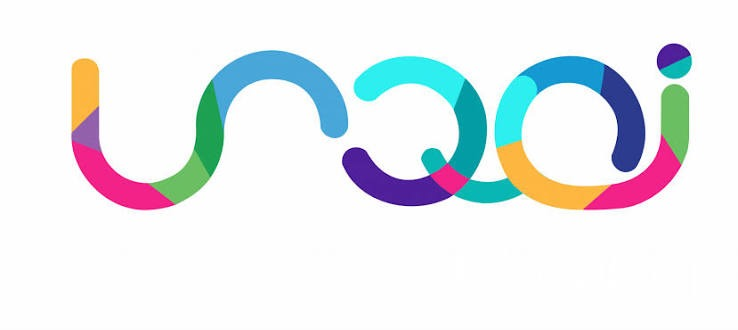
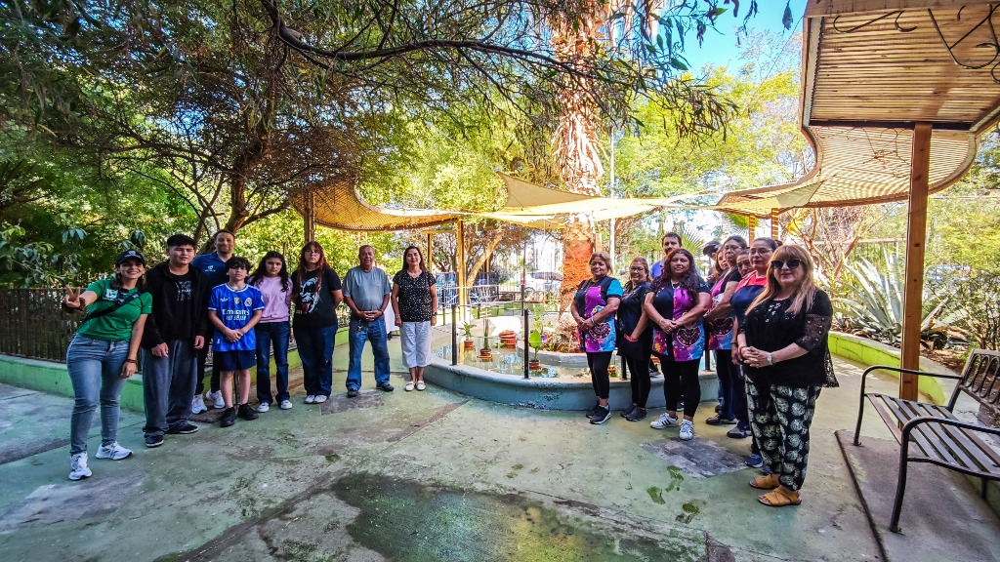
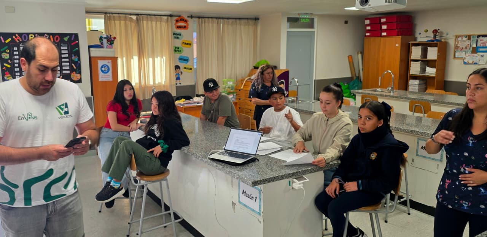
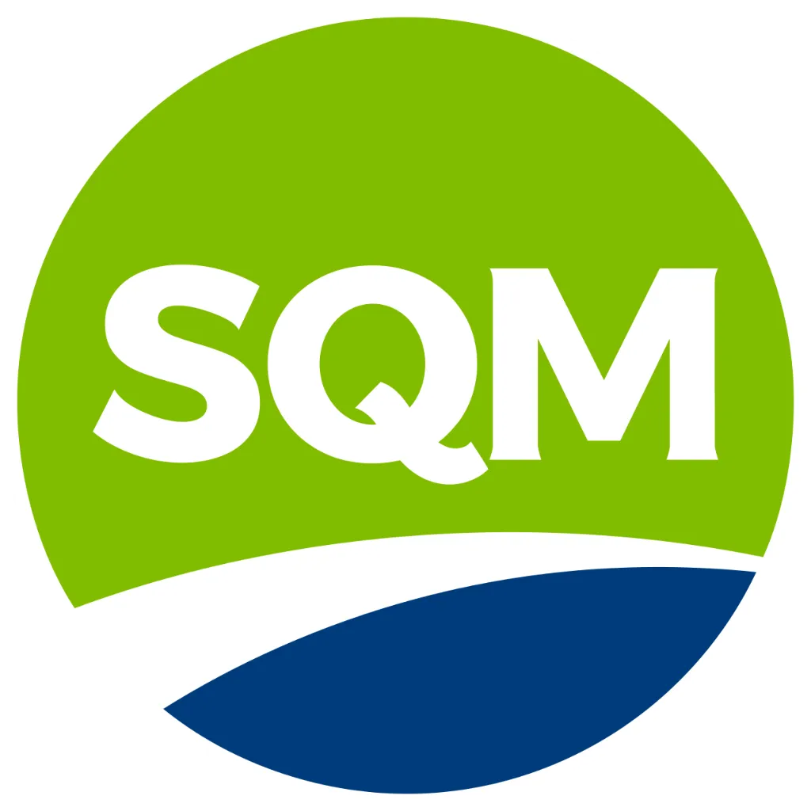
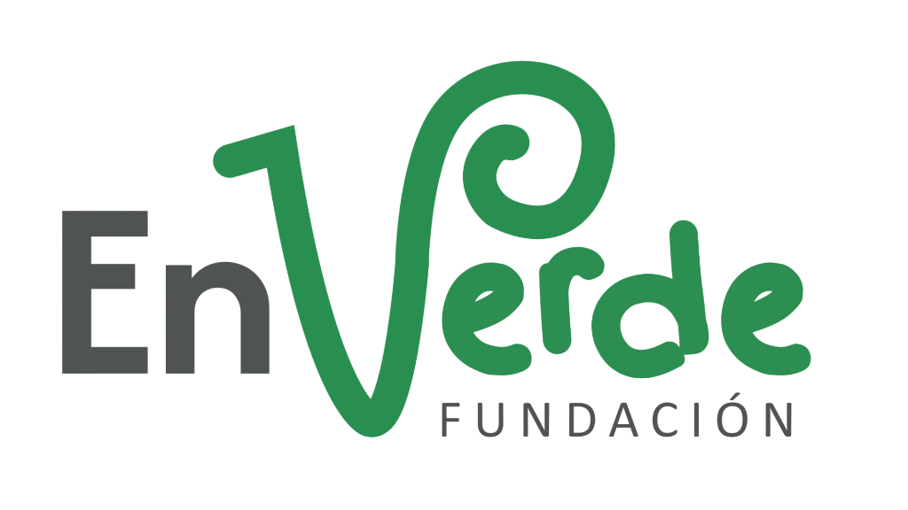
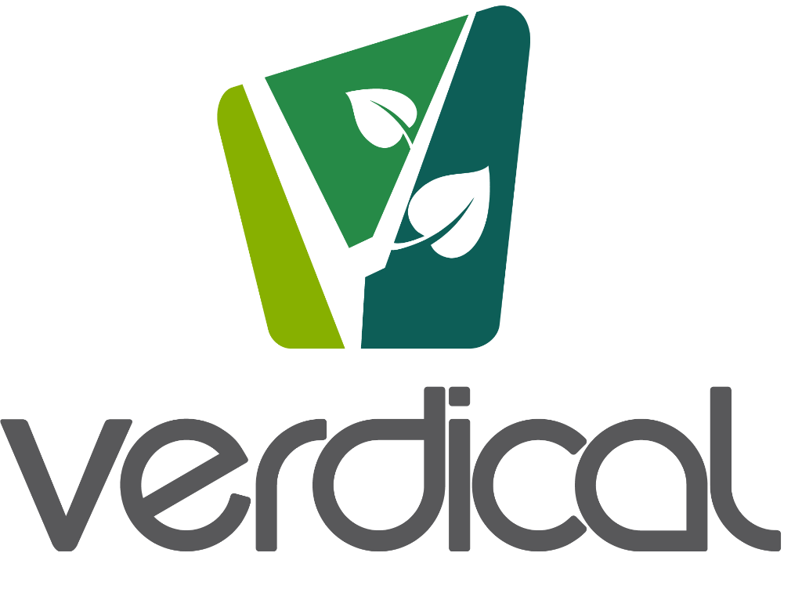

Inicio
Portada principal & Convocatoria
1. La Gran Final 2026
13 NovSalón Usqai UCN & Cronograma
2. Los 10 Equipos & Mapa
Finalistas10 Proyectos georreferenciados en Tocopilla
3. Ruta Formativa
9 Etapas metodológicas de preparación
4. ¿Qué es el Programa?
Propósito, oratoria & innovación escolar
5. Resumen de Impacto
Cifras históricas, estudiantes y escuelas
6. Recorrido Histórico
Línea de tiempo 2019 - 2026
7. Vitrina de Videos
Pitches destacados, cierres y testimonios
8. Alianzas & Documentos
SQM, Fundación En Verde, Usqai UCN & Bases
10 equipos finalistas de 9 establecimientos educativos y una delegación de más de 80 personas viajan a Antofagasta para defender sus soluciones sustentables en la Gran Final 2026.
Una jornada completa pensada para empoderar a los estudiantes tocopillanos, fomentar la camaradería regional y culminar con la ronda de presentaciones ante el jurado calificador e invitados especiales en la Universidad Católica del Norte.
Cada uno de los 10 equipos escolares dispondrá de 5 minutos para defender su solución frente al jurado evaluador, respondiendo preguntas y demostrando su despliegue oratorio.

Centro de Emprendimiento e Innovación UCN, Av. Angamos 0610, Antofagasta. Un espacio universitario de vanguardia que recibirá a la delegación de más de 80 personas que viajarán desde Tocopilla.
Traslado coordinado de estudiantes, profesores líderes y apoderados hacia la ciudad de Antofagasta.
Recepción, entrega de credenciales y reconocimiento de las instalaciones universitarias.
Prueba de sonido, proyección de presentaciones, calibración de micrófonos y reconocimiento de escenario.
Espacio de encuentro, distensión y nutrición para todos los estudiantes y docentes de la delegación.
Presentación de la mesa del jurado y autoridades de SQM, Fundación En Verde, Verdical y USQAI UCN.
Defensa consecutiva de los proyectos ante el jurado calificador. Demostración de prototipos reales y resolución de preguntas técnicas.
Evaluación confidencial según pauta técnica mientras los equipos comparten experiencias.
Entrega de galardones a los equipos ganadores, reconocimientos a docentes destacados y entrega de diplomas de honor a toda la delegación de Tocopilla.
Viaje de regreso seguro con la satisfacción de haber sido parte de una experiencia transformadora.
Explora en el mapa interactivo de Tocopilla la ubicación de cada establecimiento educativo, conoce a los estudiantes en terreno con sus fotografías y descubre los prototipos reales que defenderán en la Gran Final.
Los estudiantes no llegaron a la final por casualidad: transitaron una ruta rigurosa de 9 etapas pedagógicas de aprendizaje experiencial, prototipado real en aula y mentorías de oratoria intensivas.
Elaboración del plan de trabajo, diagnóstico territorial y primeras reuniones presenciales con directores y docentes de Tocopilla para coordinar su integración.
Jornada inicial de motivación e inducción para dar a conocer los alcances, objetivos pedagógicos y detalles del programa a los estudiantes y docentes beneficiarios.
Convocatoria abierta para centros educativos municipales y particulares subvencionados de Tocopilla, dirigida a niños, niñas y jóvenes entre 6° básico y 4° año medio.
Evaluación técnica según las bases del certamen, seleccionando aquellas propuestas ecológicas y sociales nacidas en el aula escolar que resuelven dolores de su entorno inmediato.
Acuerdo de insumos específicos con cada profesor líder y despacho directo a cada colegio (incluyendo traslados y fletes) para que los estudiantes pudieran construir sus prototipos reales.
Talleres intensivos para estudiantes y profesores en comunicación efectiva, resolución de problemas, oratoria, modelo de negocios escolar y expresión escénica.
Acompañamiento en paralelo presencial y remoto con los líderes de equipo para orientar avances, resolver inquietudes y afinar la narrativa del proyecto.
Evaluación integral de la incorporación de las herramientas formativas y cumplimiento de requisitos para ratificar a la delegación que defenderá su pitch en Antofagasta.
13 de Noviembre en Usqai UCN: Presentación de pitch de 5 minutos ante jurado calificador, deliberación, premiación valorada y reconocimiento regional.
Más que una competencia escolar, es una plataforma integral de formación que busca promover habilidades, actitudes y competencias que incentiven el emprendimiento como herramienta de desarrollo de talentos, articulando la conciencia medioambiental con el liderazgo y la oratoria temprana.
Incentivamos a estudiantes entre 6° básico y 4° medio a observar con mirada crítica problemáticas reales de su comuna (escasez hídrica, residuos plásticos y textiles, eficiencia energética, inclusión de estudiantes con NEE) y formular soluciones sostenibles con modelo de valor.
Una gran idea necesita ser comunicada con pasión y asertividad. Capacitamos a cada estudiante en dominio del escenario, expresión corporal, estructura de pitch de 5 minutos, manejo de objeciones y argumentación frente a un jurado calificador de alto nivel.
Entregamos financiamiento directo de materiales, fletes e insumos técnicos a cada establecimiento educativo para que las ideas no se queden en el papel, acompañando de forma presencial y cercana a los profesores líderes durante todo el proceso.
Un estudio de la Fundación Kauffman demuestra que los jóvenes que participan en programas tempranos de emprendimiento tienen una mayor probabilidad de desarrollar habilidades críticas como creatividad, resiliencia y resolución de problemas. En nuestra región, estas herramientas responden directamente a las brechas formativas detectadas por el informe GEM (Global Entrepreneurship Monitor) para Chile y se alinean con las prioridades de la Estrategia Regional de Innovación (ERI) de la Región de Antofagasta.
A lo largo de sus 6 años de vida institucional, Speakers en Verde ha tejido una red de impacto social, formativo y ambiental que perdura en las comunidades educativas del Norte Grande.
Desde 2019 hasta 2026, fortaleciendo ininterrumpidamente la formación escolar en innovación, sustentabilidad y oratoria en la región.
Soluciones aplicadas en desalación solar, lombricultura, jabonería sustentable, prótesis robótica 3D, domótica verde y bienestar escolar.
Vinculación territorial activa conectando centros escolares urbanos y del desierto con los principales polos de innovación regional.
Niños, niñas y jóvenes de 6° básico a 4° medio capacitados en pitch, oratoria, modelo de negocios escolar y Aprendizaje Basado en Proyectos.
Entrega directa de insumos, herramientas y fletes a cada colegio para que el factor económico nunca sea una barrera para crear.
Iniciativas como el Jardín Acuático Terapéutico (Esc. Arturo Prat) y los jabones Herencia Viva (Esc. Bernardo O'Higgins) son hoy infraestructura viva y emprendimientos en los colegios.
Programa impulsado por SQM Yodo Nutrición Vegetal y ejecutado por Fundación En Verde con el diseño de Verdical, con la colaboración de Usqai UCN, el respaldo del Gobierno Regional de Antofagasta (FIC-R), Comité Corfo Antofagasta, DAEM Tocopilla y la Municipalidad de Tocopilla.
Una línea de tiempo limpia y continua que refleja 6 años de compromiso ininterrumpido con la educación y la sostenibilidad del Norte Grande.
Speakers en Verde comienza su ejecución en la Región de Antofagasta, abarcando diversas comunas y formalizando las primeras alianzas interinstitucionales para potenciar el talento escolar temprano mediante Aprendizaje Basado en Proyectos (ABP).
Implementación del modelo de formulación de proyectos ambientales articulado con oratoria básica escolar.
Consolidación de mesas evaluadoras y jurados expertos para retroalimentar las iniciativas escolares tempranas.
Articulación virtuosa con el ecosistema de emprendimiento regional, fortaleciendo el feedback a los estudiantes y la calidad de los proyectos presentados.
Un proceso de cuatro meses que involucró a establecimientos educativos de Tocopilla y María Elena. Equipos de entre 5 y 7 alumnos (desde 6.° básico hasta 4.° medio) junto con un profesor o profesora guía, se embarcaron en un proceso formativo integral promoviendo habilidades, actitudes y competencias emprendedoras para el desarrollo de talentos.
Iniciativa liderada por Verdical, apoyada por el Comité Corfo Antofagasta a través de recursos FIC-R del Gobierno Regional de Antofagasta (Iniciativa "Transferencia Ecosistema de Emprendimiento Innovador Antofagasta", Código BIP 40014448-0), junto con la colaboración activa de la Ilustre Municipalidad de Tocopilla, el Departamento de Educación Municipal (DAEM) y SQM Yodo Nutrición Vegetal.
Presentaciones destacadas en video con proyectos emblemáticos como "Los Acuapónicos" (Escuela Estados Unidos), "Gym Mobile" (Escuela D-7) y "Comida que ilumina" (Colegio Bicentenario Sagrada Familia).
Desarrollo de proyectos emblemáticos frente a la escasez hídrica (Desalación Latrillana), residuos (Agrobag, Gloriosas Bolsas), eficiencia energética (Domótica Verde) e inclusión (Hidroponía y Jardín Terapéutico).
Una generación prolífica que demostró la madurez metodológica de los estudiantes para abordar problemáticas concretas de su entorno con rigor técnico y propósito comunitario.
Un despliegue histórico focalizado en la comuna de Tocopilla: 10 equipos de 9 establecimientos educativos y una delegación de más de 80 personas que viajarán a Antofagasta para la gran final en Usqai UCN.
Impulsado por SQM, ejecutado por Fundación En Verde con el diseño de Verdical y la colaboración de Usqai UCN.
Revive el impacto, los testimonios, los pitches escolares destacados y el archivo de proyectos que han transformado las aulas del Norte Grande.
Un registro audiovisual que captura la energía, emoción y talento de los estudiantes de Tocopilla en la culminación del programa Speakers en Verde 2025, presentando sus proyectos frente a la comunidad escolar, autoridades comunales y la mesa del jurado evaluador.
Speakers en Verde 2024 fue un programa de formación de cuatro meses que involucró a establecimientos educativos en Tocopilla y María Elena. Equipos de entre 5 y 7 alumnos, desde 6.º básico hasta 4.º medio, junto con un profesor o profesora guía, se embarcaron en un proceso formativo integral promoviendo habilidades de emprendimiento.
Liderado por Verdical, apoyado por el Comité Corfo Antofagasta a través de recursos FIC-R del Gobierno Regional de Antofagasta (Código BIP 40014448-0), con la colaboración de la Municipalidad de Tocopilla, el DAEM y SQM Yodo Nutrición Vegetal.
Sistema donde los peces expulsan desechos que son ricos en nutrientes y que pueden ser ocupados como fertilizante natural para las plantas.
Busca reducir los índices de obesidad en su establecimiento educacional, creando un gimnasio itinerante con materiales reutilizados.
Forma de gastronomía sustentable y didáctica a través de energía solar limpia, fomentando el emprendimiento en etapas tempranas.

Espacio Vivo Construido en la EscuelaUna iniciativa que nació en Speakers en Verde 2025 con el equipo liderado por el profesor Guillermo Mondaca y sus estudiantes. Hoy ya es parte física del establecimiento escolar: un entorno de calma, relajación y autorregulación emocional especialmente para estudiantes dentro del espectro autista.

Equipo Escolar en TerrenoPropuesta que aborda el impacto de los jabones tradicionales mediante jabones artesanales 100% biodegradables elaborados con hierbas medicinales ancestrales (tomillo, ricarica y boldo). Reduce la contaminación de aguas y genera oportunidades de emprendimiento sustentable para apoderados y familias tocopillanas.
Iniciativas formuladas por las comunidades escolares durante el ciclo 2025. Arrastra horizontalmente a la izquierda o derecha para explorar el catálogo interactivo continuo.
Speakers en Verde es el fruto de una virtuosa sinergia público-privada que cree en la juventud escolar del Norte Grande como motor de transformación social y ambiental.

Compromiso territorial con la formación de talentos y el desarrollo sustentable en la Región de Antofagasta.

Gestión comunitaria y vinculación directa con centros educativos y comunidades locales del desierto costero.

Consultora en sustentabilidad responsable del diseño metodológico, mentorías pedagógicas y contenidos de formación.
Centro de Emprendimiento de la Universidad Católica del Norte, casa de acogida para la gran jornada de clausura 2026.
Conoce en detalle los requisitos de postulación, los criterios de evaluación del jurado, los compromisos de las escuelas y la estructura de la Gran Final.